1
Fit the display nail
A thin nail-shaped display is retained like a press-on nail or by a reusable mechanical holder.
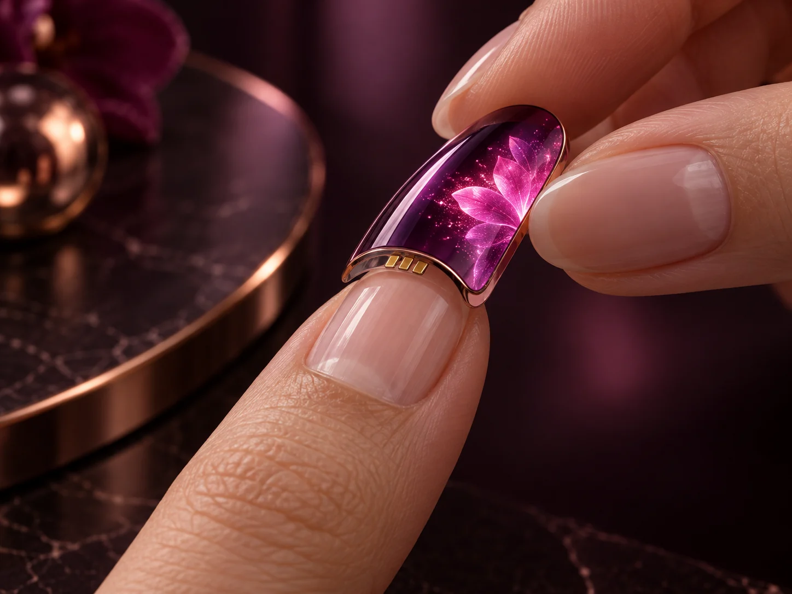

Living Nails is a wearable display architecture that moves the battery, wireless radio, and controller off the fingernail and into elegant body-worn jewelry—leaving each nail thin, light, and visually alive.
A tiny display is only the visible part. Batteries, radios, controllers, charging hardware, and connectors create the real size, weight, heat, and comfort problem.
Living Nails separates those jobs. The nail unit is a passive display. The active electronics live in a ring, bracelet, or connected jewelry system where there is more room for power and control.
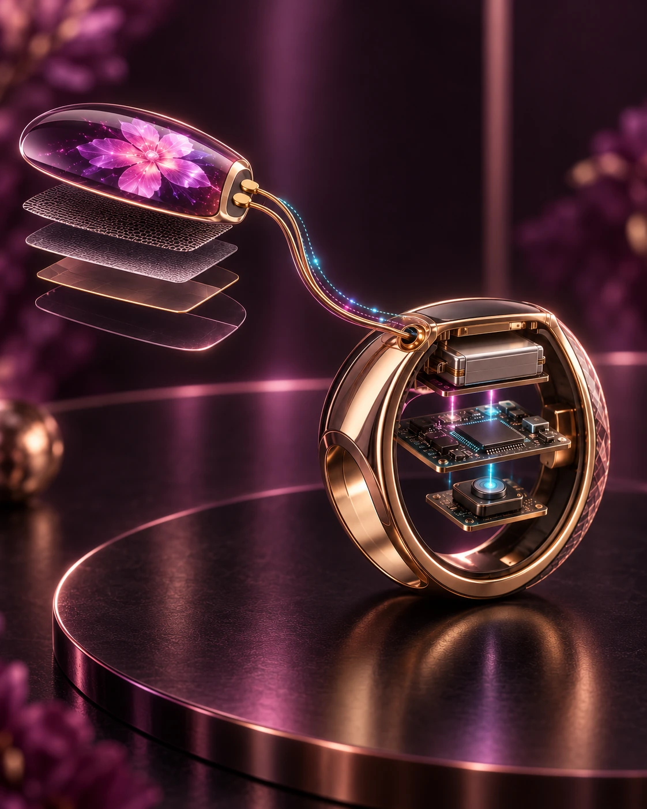
Five stages turn a set of lightweight electronic nails and wearable jewelry into one expressive interface.
A thin nail-shaped display is retained like a press-on nail or by a reusable mechanical holder.

A releasable clasp joins the nail to the ornamental conductor and completes the power-and-data path.
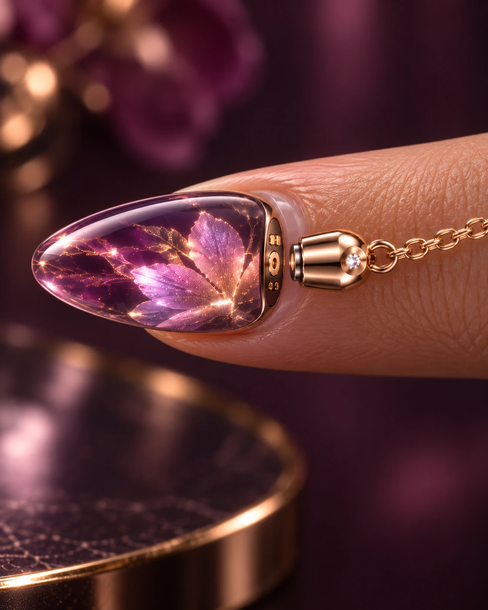
A phone sends art, colors, images, or notifications to the controller inside the ring or bracelet.
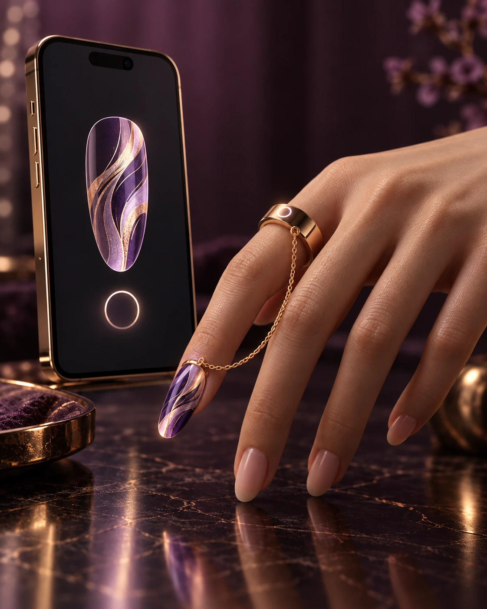
Motion sensing can recognize a raise, curl, tilt, tap, or twist and change the display in response.
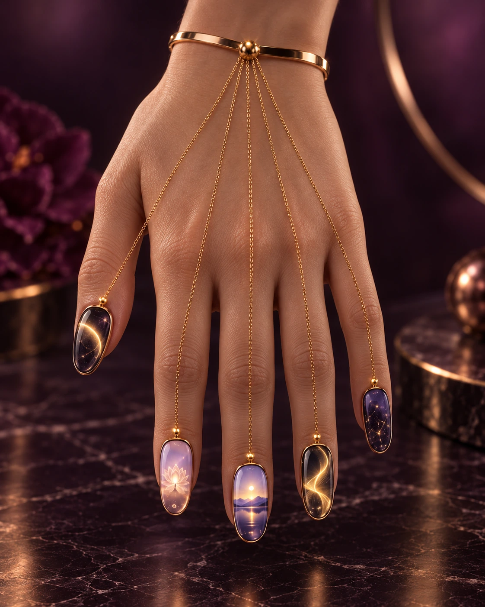
When the nails align, the controller partitions one image or moving stream across the nail array.
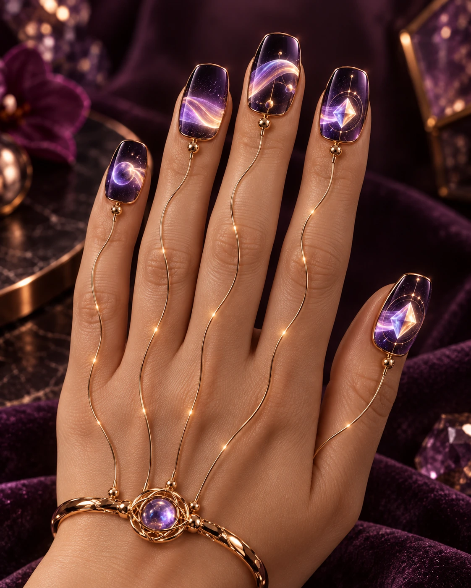
The concept is not merely a picture changing on a nail. The inventive focus is the system that makes electronic nail displays practical, wearable, removable, coordinated, and elegant.
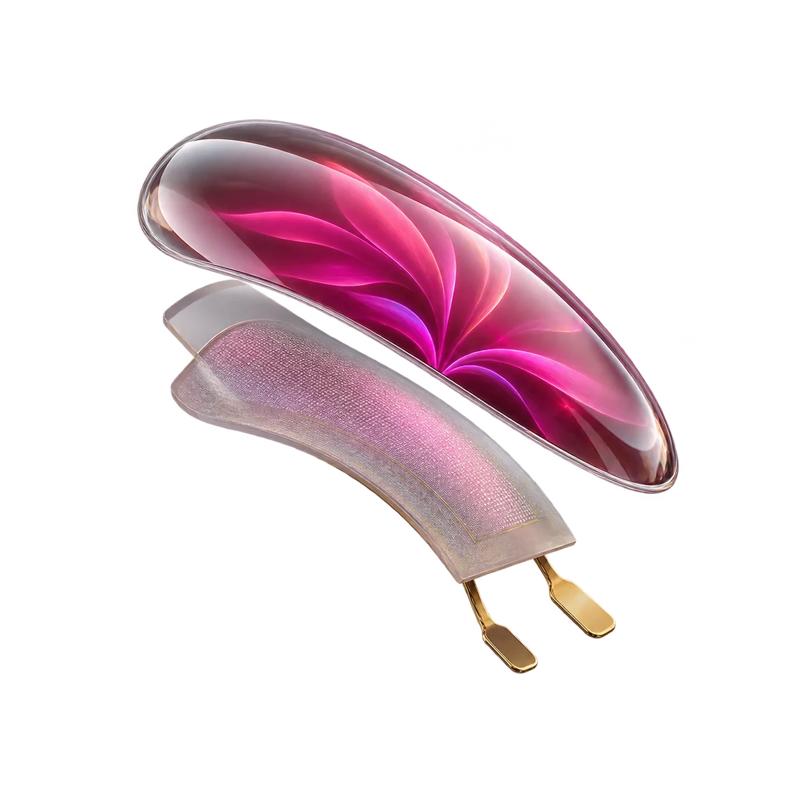
The nail carries the display and contacts, while the battery and wireless radio stay off the fingernail.
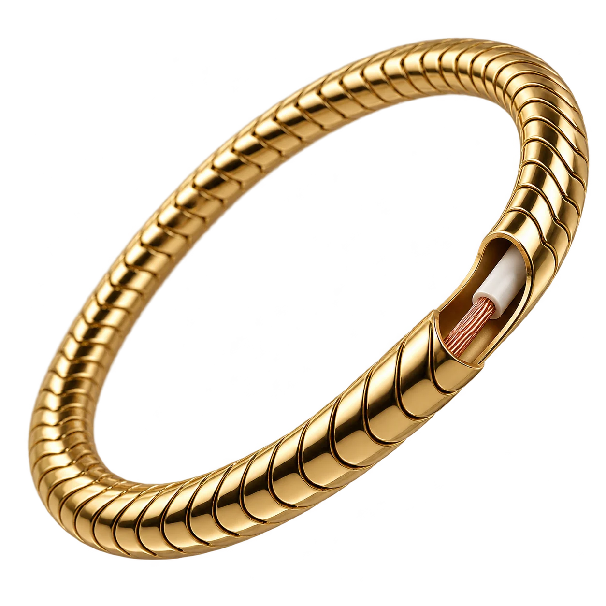
A fine chain or ornamental wire can be both the visual jewelry and the electrical path for power and display signals.
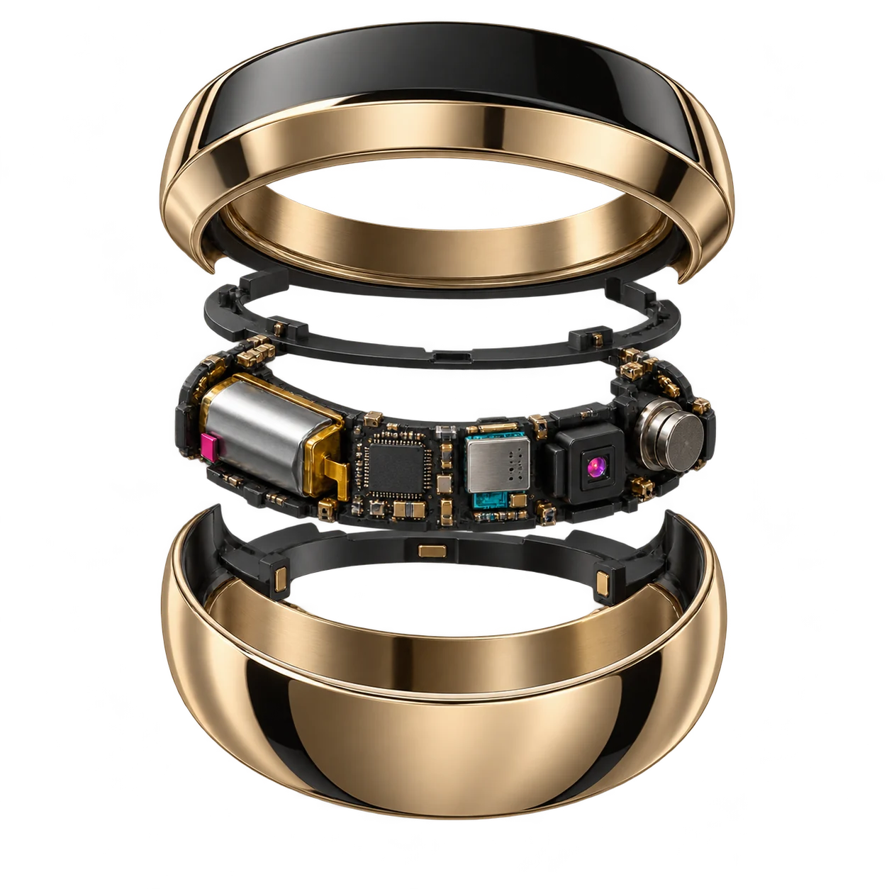
A ring or bracelet houses the rechargeable battery, controller, wireless transceiver, motion sensing, and optional haptics.
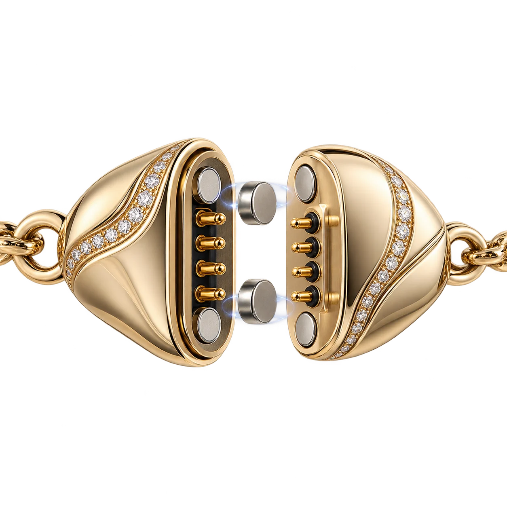
A magnetic, snap, slide, clip, or twist connector lets the wearer remove the jewelry without removing the nail.
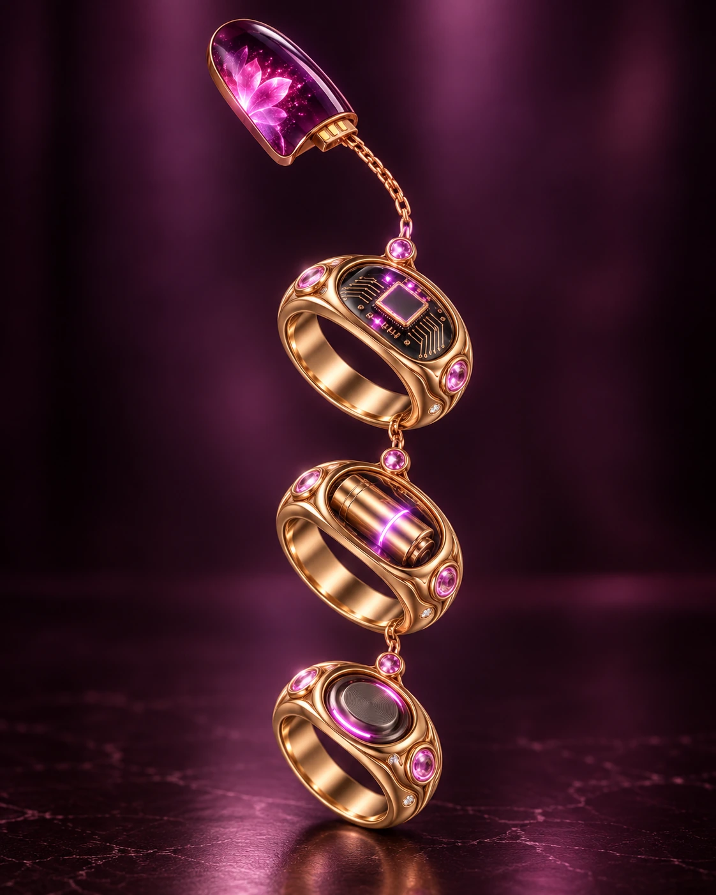
Battery, wireless, control, and sensing functions may be divided among connected rings to spread bulk and heat.
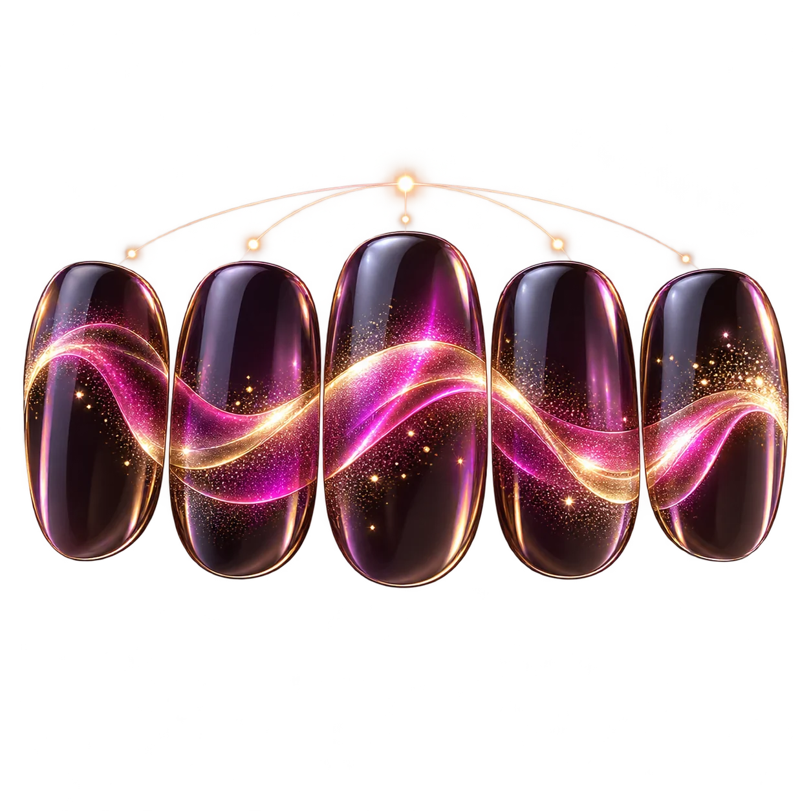
Aligned nails can become tiles of one synchronized display, rather than separate screens showing unrelated content.
Earlier approaches may place active electronics directly on a nail or treat each nail as an isolated display. Living Nails changes the physical architecture and the way multiple nails behave together.
Battery, radio, and controller compete for millimeters at the fingertip.
The nail becomes thinner and lighter while the ring or bracelet gains room for power, control, and charging.
Ordinary wiring can look technical and interfere with the fashion experience.
The visible electrical path is intentionally designed as a chain, hand ornament, band, or fine decorative element.
Each nail displays its own isolated image without becoming part of a larger interface.
The controller maps one image or stream across several nails and keeps content continuous at the boundaries.
The wearer must operate a separate control even when the hand is already in motion.
A raise, curl, tilt, twist, tap, or shake can wake, reveal, advance, select, or dismiss content.
Removing the electronics may require taking off the nail itself.
The jewelry and active connection can be released for exercise, water, or sleep while the nail or its base remains fitted.
The concept supports a simple single-finger product as well as a coordinated full-hand system.
One ring. One short conductor. One large display nail. A practical starting point that minimizes wire length and gives the display more visible area.
Several nail units coordinated from one jewelry hub. The system can present art, notifications, animations, or a single composition spanning the aligned nails.
Adhesive or mechanical mounting; removable display or retained base. The architecture supports different wearing, charging, and replacement choices.
We welcome engineers, flexible-display specialists, jewelry designers, wearable-technology researchers, prototype builders, manufacturers, educators, and supporters who want to help turn this patent-pending architecture into a working demonstration.
Get involved →Living Nails is the subject of a pending United States patent application. The public concept centers on passive display nails, body-worn jewelry hubs, ornamental power-and-data conductors, releasable connections, gesture-responsive operation, and coordinated multi-nail display behavior.
The page intentionally presents the invention at a public, educational level while development and prototyping continue.
Living Nails explores what happens when displays leave the rectangle, electronics move into jewelry, and the whole hand becomes a coordinated canvas.
Contact Benny Labs →